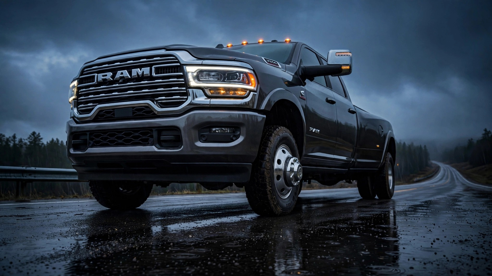

The Ram 3500 Has the Highest Death Rate in America. None of Those Deaths Are Its Driver.

The IIHS just published its latest real-world fatality data for 2023-model vehicles, and the single highest death rate figure in the entire study belongs to a Ram 3500 Crew Cab 4WD.[1] 204 deaths per million registered vehicle years. That is not a typo. No other vehicle in the dataset comes close.
Except those 204 deaths? All strangers. Zero Ram drivers. Every person who died was sitting in whatever had the misfortune of being in the Ram's path. The IIHS calls this metric "other-driver death rate," and it measures something regulators have spent decades trying not to quantify: how many people your vehicle kills when it crashes into theirs.
A Kia Rio driver has a 170-per-million chance of dying behind their own wheel, and that number should terrify anyone cross-shopping subcompacts on a budget, because what it really measures is the price of admission to a road system designed around mass, where the lightest vehicles subsidize the safety of the heaviest ones with human lives. But the Kia Rio's other-driver death rate is in the mid-fifties, roughly average, meaning the Rio kills its own driver at three times the rate it kills anyone else. Ram 3500 does the opposite, and its driver walks away while yours doesn't, which is the core difference between a vehicle that fails its occupant and one that fails everyone else sharing the road.
Class-level data turns this from anecdote into architecture, a systematic pattern that holds across every vehicle category the IIHS tracks. Very large pickups post a driver death rate of 24 per million RVY and an other-driver rate of 110, yielding a 4.6-to-1 externality ratio: for every pickup driver who dies, 4.6 people in other cars do. Minicars show the inverse at 158 to 55, roughly a 0.35-to-1 ratio, which means tiny cars die at nearly three times the rate they kill. Midsize sedans sit at the crossover point, where driver and other-driver rates are nearly identical at 67 and 65. Everything above that line exports its lethality to the vehicles below it, which absorb it instead.
FARS crash data confirms this pattern independently, measured across a full decade of American road fatalities rather than the IIHS's four-year window. The Ram 2500 shows 0.205 deaths per fatal crash in our dataset, the lowest ratio of any vehicle with a fleet over 100,000.[2] Translation: the Ram is involved in plenty of fatal crashes, but in roughly four out of five of them, someone else is the fatality, someone driving something lighter, something cheaper, something their budget could actually afford. Compare that to the Saturn S Series at 0.924, where 92 percent of fatal crashes kill the Saturn's own driver, because the car simply has no mass left to redistribute the energy of impact. Both vehicles appear in fatal crashes, but one is the bullet and the other is the target.
The counterargument writes itself, and it is legitimate, possibly the most legitimate counterargument in this entire dataset, because a Ram 3500 weighs over 7,000 pounds empty for the simple reason that it hauls 30,000 pounds at the hitch. Commercial trucks, agricultural vehicles, construction rigs, all requiring mass that is functional rather than cosmetic. You cannot regulate it away without pulling working vehicles off the road, and the IIHS itself notes that death rates reflect driver behavior and driving conditions, not just crashworthiness. Fair. But also irrelevant to the corpse in the Corolla.
But the IIHS data also shows that vehicle choice is not just personal risk management. Sixteen vehicles posted zero driver deaths, including the Audi Q7, BMW X7, Chevy Tahoe, and Toyota Tundra CrewMax, and every single one of them is a large or midsize SUV or pickup that weighs enough to walk away from almost anything. Membership in the zero-death club is a physics club. And the price of admission for one side of the equation is paid by the other side, by the Kia Rio driver who never saw the Ram coming, by the person in the Versa who chose affordable transportation and got a death sentence by proxy.
This safety arms race is a tragedy of the commons wearing a seatbelt, a system where every individual decision to buy bigger is perfectly rational but the aggregate result is lethal. In practice, very large pickups kill other drivers at 4.6 times the rate they die themselves, and minicars absorb nearly three times as many of their own drivers' deaths as they inflict on anyone else. Nobody planned this and nobody regulated it, because in America you can buy whatever you can afford and park it on any public road regardless of the physics it inflicts on the cars around it. But everybody is living with the result, or not living with it, depending on what they parked next to at the intersection.
If you are shopping for a car and sharing highways with the Ram 3500, the IIHS data suggests a narrow sweet spot: midsize SUVs with AWD, vehicles in the 4,500-to-5,500-pound range that are large enough to survive an encounter with a heavy truck but not so massive they become weapons themselves. The BMW X3, Volvo XC40, and Mazda CX-30 all posted among the lowest other-driver death rates while maintaining strong driver survival. Consider them the polite middle ground of crash physics, vehicles that neither die nor kill at extreme rates. Check your VIN at nhtsa.gov/recalls while you are at it.
Sources & References
- IIHS, Fatality Facts: Passenger Vehicle Death Rates, 2023 models and equivalent earlier models, 2021–2024 fatality data. Published July 30, 2026. iihs.org
- NHTSA, Fatality Analysis Reporting System (FARS), 2014–2023. Deaths-per-crash ratio calculated from FARS fatal crash involvement and occupant death data. nhtsa.gov